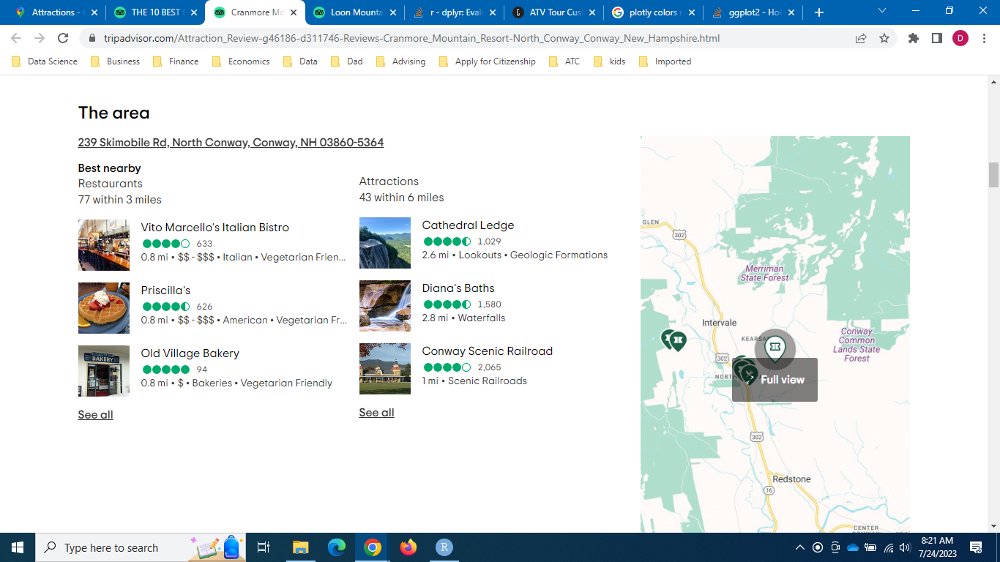

This article first appeared in danielleeconsulting.com.
Welcome to Part 2 of our data analysis series on addressing seasonality in the tourism industry! As promised last week, we are diving into the benefits of collaborating with nearby attractions and businesses to attract visitors throughout the year. In this installment, we will explore the power of partnerships and synergistic experiences that can transform how tourism businesses thrive in a dynamic and competitive landscape.
In Part 1, we uncovered valuable insights on diversification within the ski industry using data sourced from tripadvisor.com. Click this link for Part 1. Now, armed with actionable strategies from our previous analysis, we venture into collaboration as a solution to mitigate the challenges posed by seasonality.
For this analysis, I utilized a comprehensive dataset that includes information from nearby attractions, nearby restaurants, and tours posted on the ski area pages of tripadvisor.com. Additionally, I introduced the Amenity Score and the Amenity Index, which measure how competitive each ski area is relative to a typical ski area in the three northern New England states: Maine, New Hampshire, and Vermont. A high Amenity Score suggests that a ski area is well-positioned to consider a strategy of diversifying its offerings through collaboration with local businesses and attractions. On the other hand, ski areas with a lower Amenity Score may benefit from focusing on other strategies, such as the diversification from within ski areas we discussed in Part 1.
The schedule for Part 3 and Part 4 is as follows. Part 3, set for release in three weeks, will analyze customer reviews to understand their preferences and enable businesses to tailor their offerings accordingly. Part 4, scheduled for release in four weeks, will construct a machine-learning model to identify key variables impacting customer ratings, helping businesses enhance their performance. I apologize for the delay in the release of Part 3 and Part 4 of our analysis. Due to a family vacation, the schedule has been pushed back by three weeks.
Lastly, I want to emphasize that although the analysis used the ski industry as a case study, the same approach can apply to other tourism industries. The insights and strategies we uncover throughout this series are versatile and can be tailored to suit various businesses within the broader tourism sector.
Data
For general information on the data used throughout this series, please refer to the Data section in Part 1. As described in the previous section, the data was sourced from tripadvisor.com and includes comprehensive information on ski areas in the three northern New England states: Maine, New Hampshire, and Vermont.
To access the data for each ski area, follow the instructions in Part 1. Once you have the list of ski areas in each state, click on the ski area of your choice to find the specific area information on the following page. An example is in the photo below.
The ski area information provides essential details, such as the number of nearby restaurants and attractions within certain distances, offering valuable insights into the local amenities available to visitors.

To ensure clarity and transparency, I present the definitions of key variables used in our analysis:
Number of Nearby Restaurants: This variable represents the count of restaurants within three miles of the ski area. It measures the dining options available near the ski area, contributing to the visitor experience.
Number of Nearby Attractions: The number of attractions within six miles of the ski area is captured by this variable. It provides insight into nearby recreational activities and points of interest that can complement visitors’ ski experiences.
Number of Tours in the State: This variable represents the count of unique tours available within each state, showcasing the diverse array of tour experiences visitors can engage in beyond skiing, adding value to their overall stay. It is important to note that all ski areas in a state receive the same value for this variable since it is statewide data. I chose to utilize statewide data as the second best option, given the constraints of the available data, to minimize the potential inaccuracies and enhance the overall reliability of our analysis. The potential inaccuracies arise from the fact that not all tours listed on individual ski area pages are nearby the ski areas, and the number of tours listed on each ski area page is capped at 15, likely due to space limitations. Therefore, I believe using statewide data provides a more consistent and robust foundation for our analysis.
Number of Tour Types in the State: The number of unique tour types or categories available in each state is captured by this variable. It highlights the diverse tour offerings that cater to different interests and preferences. Like in the case of the Number of Tours in the State, all ski areas in a state receive the same value.
Amenity Score: The Amenity Score is a pivotal metric calculated by summing the four aforementioned variables after normalizing them using the min-max method. This normalization process transforms the values of each variable to a standardized 0-1 scale, ensuring that each variable contributes equally to the overall score. For example, a ski area with the maximum value in all four component variables would achieve an Amenity Score of 4. Conversely, a ski area with the minimum value in all four component variables would receive an Amenity Score of 0.
Amenity Index: The Amenity Index is a relative measure, with a score of 100 representing the mean. A value greater than 100 indicates a ski area’s greater potential than the average in diversifying its offerings through collaboration with local attractions and establishments. On the other hand, a value lower than 100 suggests a ski area’s smaller potential in this aspect. By utilizing the Amenity Index, tourism businesses can gauge their competitive position and strategically leverage their strengths to attract visitors and enhance their overall customer experience. The Amenity Index is calculated by dividing each ski area’s Amenity Score by the overall mean of the scores of all three states.
Mapping Amenity Index Across Northern New England States
The map below visualizes the detailed amenity information for ski areas across the northern New England states. By hovering over specific locations on the map, operators can access detailed information about each ski area, including ratings and types of offerings. Furthermore, the interactive map offers a zoom functionality that allows operators to focus on specific regions of interest. By clicking on the plus sign, ‘+’, located in the upper right corner of the map, operators can zoom in and examine smaller areas of multiple ski areas. This zoom feature proves particularly useful when exploring regions with a high concentration of ski areas, such as southern Vermont.Please click the reset button to revert the map back to its original state.
Let’s explore the key insights derived from the map:
New Hampshire Shines Bright: New Hampshire ski areas appear brightly colored on the map, indicating they received high scores in the Amenity Index. This brightness suggests that ski areas in New Hampshire have a greater potential for diversification through partnerships with nearby attractions and businesses. They possess advantageous amenities, setting them apart as promising candidates for expanding their offerings and attracting visitors throughout the year.
Vermont Ski Areas in the Dark: In contrast, Vermont ski areas appear darker on the map, reflecting lower scores in the Amenity Index. This finding suggests that Vermont ski areas may have a comparatively smaller potential for diversification through local collaborations. It is crucial for Vermont ski areas to explore innovative strategies to enhance their offerings and cater to a broader range of visitor interests, such as diversification from within ski areas discussed in Part 1.
Example of High Scorer - Cranmore Mountain Resort: An excellent example of a high scorer is Cranmore Mountain Resort in New Hampshire. It earned the highest score in all four component variables, boasting 77 nearby restaurants, 43 nearby attractions, 85 unique tours available in New Hampshire ski areas, and 26 unique tour types available in New Hampshire ski areas. With an impressive Amenity Score of four, Cranmore Mountain Resort’s potential for diversification is nearly three times the average score in the three-state region.
The Amenity Score and Index play a crucial role in assisting ski areas to strategize, customize their offerings, and foster meaningful collaborations. For instance, numerous ski areas in New Hampshire with a high amenity score find it advantageous to diversify by partnering with local attractions and establishments. However, this strategy may not be as favorable for many Vermont ski areas, at least in the short term.
Analysis
Exploring Nearby Attractions and Restaurants
The plot below shows the count of nearby attractions and restaurants for each ski area in the northern New England states. Let’s delve into the key insights offered by this plot:
New Hampshire Dominates Nearby Attractions: Regarding nearby attractions, New Hampshire ski areas stand out by far. On average, a typical ski area in New Hampshire enjoys over 15 attractions within six miles. Following New Hampshire is Vermont, with an average of 13.3 nearby attractions per ski area. Maine comes in third, with an average of 12.1 attractions near ski areas. The abundance of nearby attractions in New Hampshire paves the way for ski areas in the state to craft enticing bundled packages, providing visitors with diverse experiences during their stay.
Vermont Leads in Nearby Restaurants: Vermont takes the lead in the number of nearby restaurants, boasting nearly 15 restaurants per ski area on average. This finding aligns with Vermont’s emphasis on the Food & Drink tour type, as evident in the plot at the end of this report. New Hampshire closely follows Vermont in terms of the number of nearby restaurants, while Maine lags behind as the distant third. With a wealth of restaurants in close proximity, Vermont ski areas have the potential to create attractive culinary packages, enhancing visitors’ overall enjoyment and satisfaction.
By analyzing the number of nearby attractions and restaurants, ski areas can strategically design bundled packages, collaborating with local establishments to offer unique experiences to visitors. These packages can elevate the overall appeal of ski areas, attracting a diverse clientele and mitigating the impact of seasonality. Through creative partnerships, ski areas can capitalize on the region’s diverse offerings, delivering unforgettable experiences that resonate with travelers throughout the year.

Exploring Tours: Quantity and Quality
The plot below provides insights into the quantity and quality of tours available for ski areas in each state. tripadvisor.com describes tours as “top ways to experience nearby attractions.” However, it is important to note that the tours may not always be nearby the ski areas since we use tours available in each state for the analysis. Therefore, it requires caution for interpretation.
The top row of the plot displays four variables representing the quantity of tours available in each state: the total number of tours, the number of unique tour types, the average number of tours per ski area, and the average number of unique tour types per ski area. Conversely, the bottom row focuses on two quality indicators of tours: the average tour ratings and the average number of tour reviews.
One observation that immediately stands out is the disparity in the number of tours between Vermont and the other two states. Vermont ski areas have a relatively smaller number of tours available, with only 33 listed tours and 13 unique tour types, compared to 85 and 26 in New Hampshire, respectively. This discrepancy puts Vermont ski areas at a potential disadvantage regarding their ability to diversify offerings using tours in the region. When considering the size of the ski industry in each state, the shortage becomes even more apparent: Vermont’s average number of tours per ski area is the smallest due to the higher number of ski areas in the state.
Moving on to the quality indicators, we encounter some intriguing findings. Vermont lacks information in this aspect due to many missing values, which could be another indicator of the limited tour development within the state.
Comparing New Hampshire and Maine, the average number of tour reviews suggests that tours in New Hampshire are more popular than those in Maine. This finding aligns with our observations from Part 1, where we found that the average number of ski area reviews is larger in New Hampshire than in the other two states, indicating New Hampshire ski areas’ higher popularity, larger user base, or more effective marketing efforts. However, when it comes to average tour ratings, both states boast nearly identical scores, suggesting a similar level of customer satisfaction with the tours offered.

Exploring Tour Types: Opportunities for Differentiation and Collaboration
The plot below showcases various tour types or categories available in each state, offering valuable insights into the strengths and potential opportunities for ski areas to collaborate with local tour agencies or establishments.
The brightness of each cell in the plot indicates the number of tour types available in the respective state. For example, the brightest cell represents historical tours in New Hampshire, with 19 such tours available in the state.
This tour type information likely reflects the types of attractions and experiences each state offers. As a result, ski areas can strategically align their offerings with the unique strengths of their location by collaborating with local tour agencies or establishments. For instance, New Hampshire ski areas may consider incorporating historical tours into their offerings if they are not already doing so, capitalizing on the rich historical landmarks and attractions in the state. Similarly, Vermont ski areas may explore the possibilities of offering fun and game tours to complement the vibrant recreational atmosphere of the region.
Conversely, the presence of rare tour types may present an opportunity for ski areas to differentiate themselves from competitors. By carefully considering these rare tour types and assessing their feasibility, ski areas can craft distinctive experiences that cater to specific customer preferences.
Moreover, tour types not present in a state may indicate untapped potential for new tour products. The gray cells on the plot signify tour types that are absent in the corresponding state. This observation prompts tourism businesses, including ski areas, to explore the development of new tour offerings that align with unique characteristics and attractions of their region.

Summarizing all in the Amenity Score
The plot below presents a comprehensive overview of the amenity factors at the state level, shedding light on the following key insights:
New Hampshire’s Significant Advantage: New Hampshire ski areas enjoy a significant advantage in diversifying their offerings through collaborations with local attractions and establishments. On average, a New Hampshire ski area is five times more advantageous in this aspect compared to a Vermont ski area. It suggests that New Hampshire’s ski industry is better positioned to thrive beyond traditional peak seasons, leveraging a diverse range of offerings to attract visitors throughout the year.
Diverse Tour Offerings in New Hampshire: The driving force behind New Hampshire’s advantage lies in its mature and diverse tour development. The state boasts a vibrant array of tour offerings, likely fueled by its abundance of attractions. On average, a ski area in New Hampshire benefits from the proximity of over 15 attractions, creating a strong foundation for crafting enticing bundled packages and engaging visitors with varied experiences.
Vermont’s Culinary Advantage: While New Hampshire excels in diverse tour development, Vermont holds a unique advantage in its vibrant culinary industry. A typical ski area in Vermont benefits from nearly 15 nearby restaurants, showcasing the state’s emphasis on the Food & Drink tour type. This culinary richness provides Vermont ski areas with an excellent opportunity to enhance visitors’ overall enjoyment and satisfaction through exceptional dining experiences.
Overall, this state-level analysis highlights the strengths and advantages each state possesses in terms of diversifying offerings through collaborations with nearby attractions and establishments. By leveraging these strengths and fostering creative partnerships, ski areas can unlock their potential to address seasonality challenges effectively and provide visitors with unforgettable experiences, ensuring sustained success in the dynamic tourism industry.

Actionable Insights
Leveraging Tour Offerings: The analysis reveals the significance of tour offerings in diversifying ski areas’ offerings and attracting visitors throughout the year. Ski areas in New Hampshire, with their abundance of nearby attractions, have a substantial advantage in this aspect. To address seasonality, ski areas should consider collaborating with local tour agencies or establishments to develop and promote diverse tour experiences. Creating bundled packages that combine skiing with nearby attractions can enhance visitors’ overall stay and satisfaction.
Culinary Partnerships in Vermont: Vermont ski areas hold a unique advantage in their vibrant culinary industry, with an average of nearly 15 nearby restaurants. Ski areas in the state can capitalize on this culinary richness by forging partnerships with local restaurants to offer exclusive dining experiences to their guests. Collaborative efforts that highlight the region’s food and drink offerings can elevate the overall appeal of Vermont ski areas and create memorable experiences for visitors.
Capitalizing on State Strengths: Each state’s unique strengths in diversification are apparent through the analysis. Ski areas should tailor their strategies to align with their state’s offerings. New Hampshire’s advantage lies in diverse tour development, while Vermont’s culinary industry shines. Understanding these strengths allows ski areas to focus on collaborative initiatives that align with the strengths of their respective states.
Bundled Packages for Differentiation: The number of nearby restaurants and attractions can influence the types of bundled packages ski areas can offer. By collaborating with local establishments, ski areas can develop packages that cater to different visitor preferences. For instance, areas with abundant attractions can create packages that combine skiing with historical or adventure tours, while areas with a vibrant culinary scene can focus on food and drink experiences.
Overall, the actionable insights from Part 2 underscore the importance of collaborative efforts and leveraging regional strengths to address seasonality challenges. By capitalizing on diverse tour offerings, culinary excellence, and bundled packages, ski areas in the northern New England states can enhance customer experiences, attract visitors throughout the year, and ensure sustainable success in the dynamic tourism industry.
Conclusion
In conclusion, Part 2 has provided valuable insights into how ski areas can effectively leverage local attractions and establishments to address seasonality challenges. By analyzing the amenity factors, ski areas can understand their competitive position and potential for diversification through collaboration.
By comparing their amenity factors to competitors and considering the unique strengths of their state, ski areas can strategize and tailor their offerings to attract visitors throughout the year. The map is a valuable tool, providing ski areas with actionable insights to enhance their competitive edge.
Looking ahead to Part 3, we will delve into text analysis of customer reviews to identify specific pain points experienced during different seasons. This analysis will enable ski areas to tailor their offerings to match customer expectations and preferences, ensuring a more personalized and exceptional visitor experience.
Thank you for joining me on this journey this week, and I look forward to seeing you in three weeks.